Stress helpers in MAM, Koren Classic Tanakh, and Feldheim Simanim Tanakh
The table lists selected differences from MAM in prose verses. It covers stress helpers present in MAM and includes some cases where a printed edition has a helper absent from MAM.
The Decalogue comparisons use MAM’s printed tradition for Koren and MAM’s manuscript tradition for the Simanim Tanakh. Both comparisons use תחתון for the main Decalogues and עליון for the appendix Decalogues.
In MAM’s prose verses, thirteen chanted words have a single pashta and a final syllable ending in two consonants bearing sheva. The Simanim Tanakh has a redundant pashta helper in all thirteen cases, and Koren has one in eleven.
At 2Sam 4:6, Koren, the Simanim Tanakh, and MAM at Hebrew Wikisource have the telisha gedolah helper on the first he in וְ֠הֵ֠נָּה. MAM-with-doc has the helper on nun. MAM at 2Sam 4:6
At 2Sam 13:20, MAM at Hebrew Wikisource, Koren, and the Simanim Tanakh have a single zarqa on the first occurrence of אָחִיךְ֮. MAM-with-doc has a zarqa helper on ḥet there. MAM at 2Sam 13:20
| Verse | Difference | Scan crop | |
|---|---|---|---|
MAMאֲשֶׁר֩ Korenאֲ֠שֶׁ֠ר | Lev 7:36 p. 162 | Different accent MAM’s note reports telisha gedolah in Koren and lists a doubled form. The scanned copy has the doubled form. MAM doc-note | 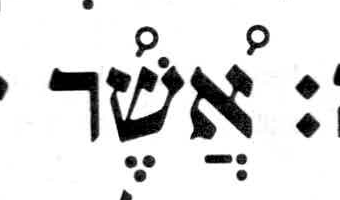 |
MAMקִ֞֠רְב֞֠וּ Koren / SimTanקִ֠רְב֞וּ | Lev 10:4 Koren p. 166 SimTan p. 175 | Geresh or gershayim + telisha gedolah Both printed editions have telisha gedolah on qof and gershayim on bet. MAM has both marks on both letters. MAM doc-note MAM’s notes describe the two cases where geresh or gershayim and telisha gedolah belong on different letters. MAM notes on telisha gedolah | Koren 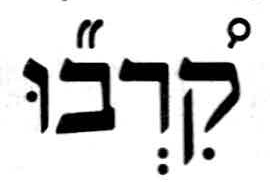 SimTan |
MAMשְׁ֚תַּיִם Korenשְׁתַּ֙יִם֙ | Lev 23:17 p. 190 | Different accent MAM’s note gives the doubled pashta for Koren and other printed editions. MAM doc-note | 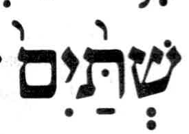 |
MAMשָׁ֩טוּ֩ SimTanשָׁטוּ֩ | Num 11:8 p. 236 | no SH in the Simanim Tanakh The MAM doc-note gives penultimate stress for MAM and Koren and final stress for the Simanim Tanakh, following Sephardic and Yemenite reading traditions. MAM doc-note |  |
MAMוַיֵּתֵא֙ Korenוַיֶּ֙תֵא֙ | Deut 33:21 p. 326 | SH in Koren only MAM’s note reports final stress in MAM and a segol with the pashta stress helper on yod in Koren. The scan also shows a dagesh in yod. MAM doc-note | 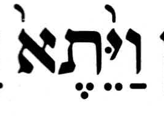 |
MAMוָ֠אֶקַּ֠ח Korenוָֽ֠אֶקַּח֠ | Josh 24:3 p. 40 | Different SH placement Koren has the telisha gedolah helper on the final ḥet. This is almost certainly an error in Koren, since the helper belongs on the first letter of the stressed syllable. MAM and the Simanim Tanakh have the helper on qof, the first letter of the final syllable. | 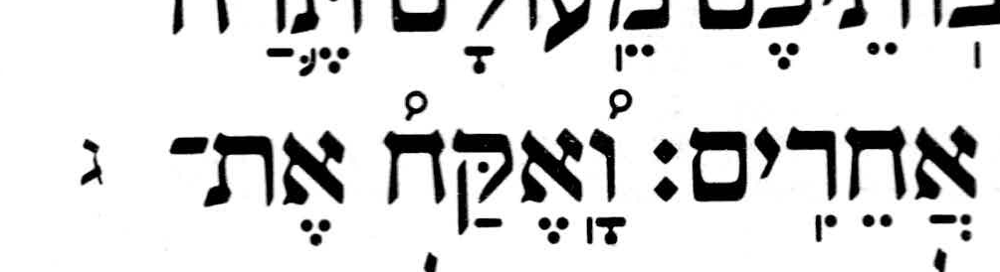 |
MAMוַיֹּ֩אמְרוּ֩ Korenוַיֹּֽאמְרוּ֩ | Judg 18:19 p. 77 | no SH in Koren Koren has final telisha qetanna and meteg on yod. MAM and the Simanim Tanakh have the telisha qetanna helper on yod. | 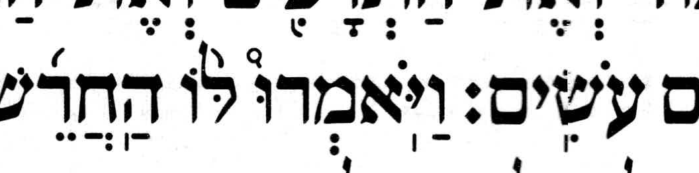 |
MAMוַיֵּבְךְּ֙ Koren / SimTanוַיֵּ֙בְךְּ֙ | 2Sam 3:32 Koren p. 146 SimTan p. 511 | redundant SH in both printed editions Both editions have a pashta helper on yod within the final syllable. MAM indicates final stress with a single pashta. | Koren 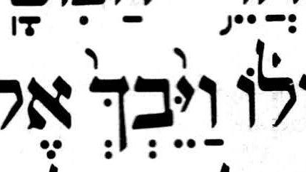 SimTan |
MAMוַיֹּ֙אמֶר֙ Korenוַיֹּ֣אמֶר | 2Kgs 20:14 p. 279 | Different accent Koren has munaḥ on yod in the second occurrence of this chanted word. | 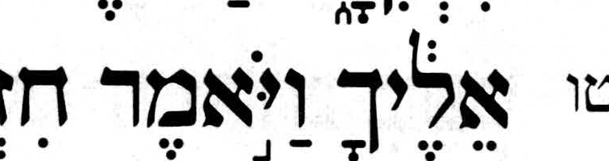 |
MAMוְשָׁפַלְתְּ֙ Koren / SimTanוְשָׁפַ֙לְתְּ֙ | Isa 29:4 Koren p. 320 SimTan p. 696 | redundant SH in both printed editions Both editions have a pashta helper on pe within the final syllable. MAM indicates final stress with a single pashta. | Koren 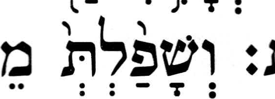 SimTan |
MAMתוֹסִ֙יפִי֙ Korenתֽוֹסִיפִי֙ | Isa 47:1 p. 341 | no SH in Koren Koren also prints a meteg on initial tav. | 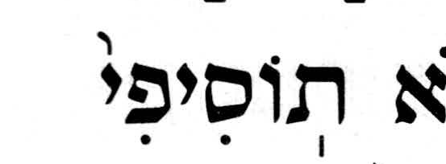 |
MAMתוֹסִ֙יפִי֙ Korenתֽוֹסִיפִי֙ | Isa 47:5 p. 341 | no SH in Koren Koren also prints a meteg on initial tav. | 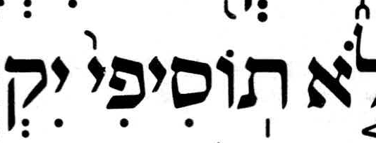 |
MAMאָמַרְתְּ֙ Koren / SimTanאָמַ֙רְתְּ֙ | Isa 47:10 Koren p. 342 SimTan p. 719 | redundant SH in both printed editions Both editions have a pashta helper on mem within the final syllable. MAM indicates final stress with a single pashta. | Koren 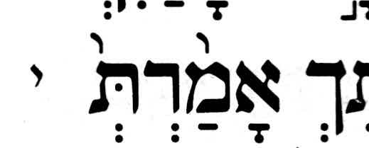 SimTan |
MAMוְיָנַקְתְּ֙ Koren / SimTanוְיָנַ֙קְתְּ֙ | Isa 60:16 Koren p. 354 SimTan p. 733 | redundant SH in both printed editions Both editions have a pashta helper on nun within the final syllable. MAM indicates final stress with a single pashta. | Koren 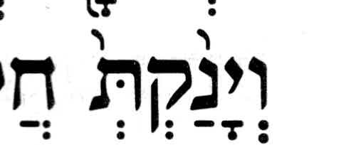 SimTan |
MAMרָצֹ֙חַ֙ Korenרָצֹחַ֙ | Jer 7:9 p. 373 | no SH in Koren | 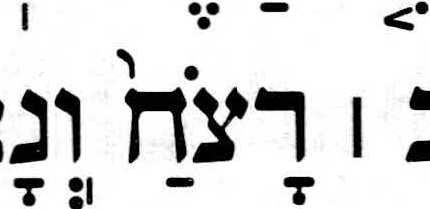 |
MAMאֶת־רֵעֵ֙הוּ֙ Korenאֶת־רֵעֵ֣הוּ | Jer 9:7 p. 376 | Different accent Koren has munaḥ on ayin. | 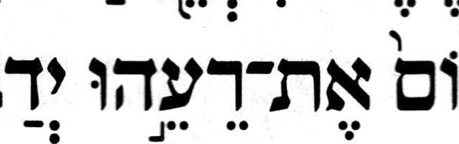 |
MAMמַה־נֵּחַנְתְּ֙ Koren / SimTanמַה־נֵּחַ֙נְתְּ֙ | Jer 22:23 Koren p. 395 SimTan p. 777 | redundant SH in both printed editions Both editions have a pashta helper on ḥet within the final syllable. MAM indicates final stress with a single pashta. | Koren 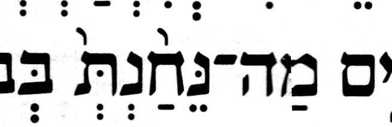 SimTan |
MAMיֹשַׁבְתְּ֙ SimTanיֹשַׁ֙בְתְּ֙ | Jer 22:23 p. 777 | redundant SH in the Simanim Tanakh The Simanim Tanakh has a pashta helper within the final syllable. Koren’s margin qere (p. 395) has a single pashta, as in MAM. The omission is surprising because Koren has a helper in eleven of the thirteen cases like this. | Koren 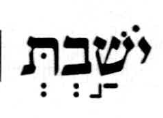 SimTan |
MAMוְתַ֩מּוּ֩ Korenוְתַמּוּ֩ | Jer 44:27 p. 434 | no SH in Koren The MAM doc-note attributes the doubled telisha qetanna to the Aleppo Codex. MAM doc-note | 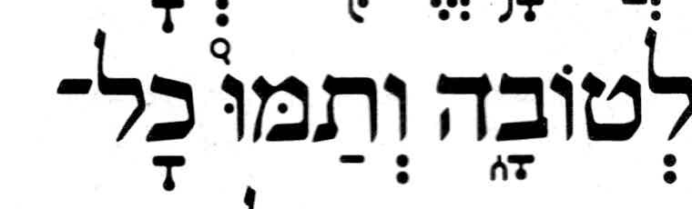 |
MAMוְגַם־נִלְכַּדְתְּ֙ Koren / SimTanוְגַם־נִלְכַּ֙דְתְּ֙ | Jer 50:24 Koren p. 443 SimTan p. 829 | redundant SH in both printed editions Both editions have a pashta helper on kaf within the final syllable. MAM indicates final stress with a single pashta. | Koren 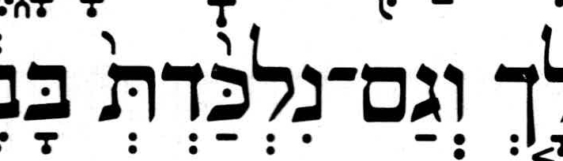 SimTan |
MAMשֹׁכַנְתְּ֙ Koren / SimTanשֹׁכַ֙נְתְּ֙ | Jer 51:13 Koren p. 445 SimTan p. 831 | redundant SH in both printed editions Both editions have a pashta helper on kaf within the final syllable. MAM indicates final stress with a single pashta. Koren has this form in its pointed margin qere. | Koren 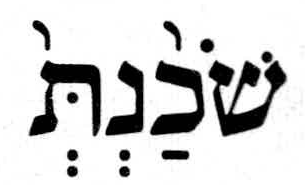 SimTan |
MAMבַּעֲשׂ֩וֹתִי֩ Korenבַּֽעֲשׂוֹתִי֩ | Ezek 5:15 p. 458 | no SH in Koren The MAM doc-note attributes the doubled telisha qetanna to the Aleppo and Leningrad codices. Koren also has a meteg on bet. MAM doc-note | 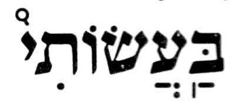 |
MAMכֵּ֠לַ֠י Korenכֵּלַ֨י | Ezek 12:7 p. 466 | Different accent Koren has qadma on lamed, before geresh on the next chanted word. | 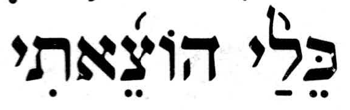 |
MAMלֹֽא־זָכַרְתְּ֙ Koren / SimTanלֹֽא־זָכַ֙רְתְּ֙ | Ezek 16:43 Koren p. 473 SimTan p. 863 | redundant SH in both printed editions Both editions have a pashta helper on kaf within the final syllable. MAM indicates final stress with a single pashta. Koren has this form in its pointed margin qere. | Koren 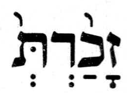 SimTan |
MAMפִּלַּלְתְּ֙ Koren / SimTanפִּלַּ֙לְתְּ֙ | Ezek 16:52 Koren p. 473 SimTan p. 863 | redundant SH in both printed editions Both editions have a pashta helper on the first lamed within the final syllable. MAM indicates final stress with a single pashta. | Koren 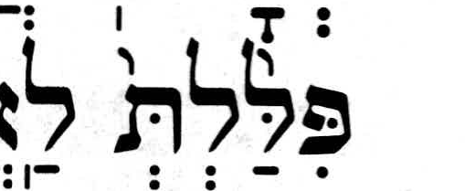 SimTan |
MAMבַסּ֙וּגַר֙ Korenבַסּוּגַר֙ | Ezek 19:9 p. 478 | no SH in Koren | 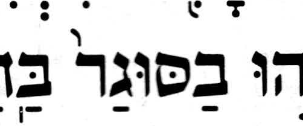 |
MAMוְיָשַׁבְתְּ֙ Koren / SimTanוְיָשַׁ֙בְתְּ֙ | Ezek 23:41 Koren p. 487 SimTan p. 878 | redundant SH in both printed editions Both editions have a pashta helper on shin within the final syllable. MAM indicates final stress with a single pashta. | Koren 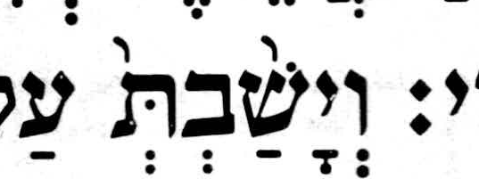 SimTan |
MAMוּ֜֠לְאֵ֜֠לֶּה Koren / SimTanוּ֠לְאֵ֜לֶּה | Ezek 48:10 Koren p. 526 SimTan p. 921 | Geresh or gershayim + telisha gedolah Both printed editions have telisha gedolah on vav and geresh on alef. MAM has both marks on both letters. MAM’s note reports Koren’s placement. MAM doc-note | Koren 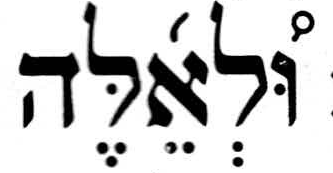 SimTan |
MAMתִרְגַּ֙לְתִּי֙ Korenתִּרְגַּ֣לְתִּי | Hos 11:3 p. 538 | Different accent Koren has munaḥ on gimel and a dagesh in initial tav. | 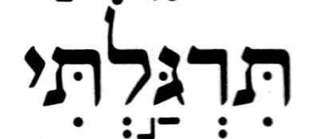 |
MAMלִירוּשָׁלַ֙͏ִם֙ Korenלִירֽוּשָׁ֙לַ͏ִם֙ | Zech 1:16 p. 574 | Different SH placement Koren puts the pashta helper on shin. MAM and the Simanim Tanakh put it on lamed. | 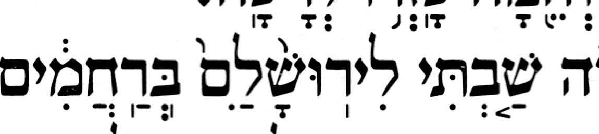 |
MAMוְהָלַכְתְּ֙ SimTanוְהָלַ֙כְתְּ֙ | Ruth 2:9 p. 1228 | redundant SH in the Simanim Tanakh The Simanim Tanakh has a pashta helper within the final syllable. Koren (p. 158) has a single pashta, as in MAM. The omission is surprising because Koren has a helper in eleven of the thirteen cases like this. | Koren 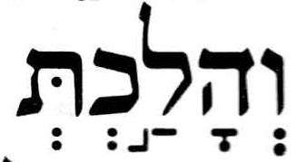 SimTan |
MAMוַיֵּשְׁתְּ֙ Koren / SimTanוַיֵּ֙שְׁתְּ֙ | Ruth 3:7 Koren p. 160 SimTan p. 1230 | redundant SH in both printed editions Both editions have a pashta helper on yod within the final syllable. MAM indicates final stress with a single pashta. | Koren 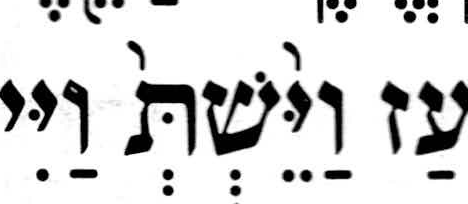 SimTan |
MAMוַיֹּ֗אמֶר Korenוַ֠יֹּ֠אמֶר | Esth 6:1 p. 193 | Different accent MAM’s note reports the doubled telisha gedolah for Koren and the Simanim Tanakh. The scanned Koren copy has the doubled form. The scanned Simanim Tanakh has revia, in agreement with MAM. MAM doc-note | 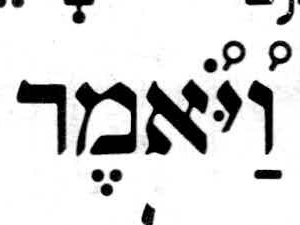 |
MAMלָשֶׁ֙בֶת֙ Korenלָשֶׁ֤בֶת | Neh 11:1 p. 264 | Different accent Koren has mahapakh on shin. | 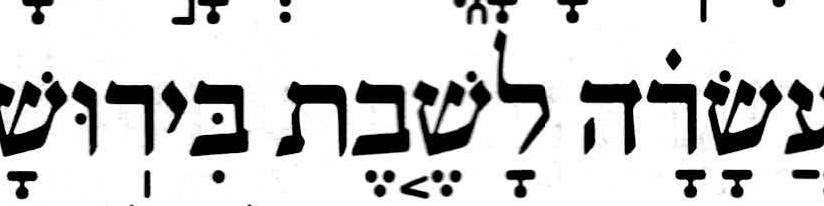 |
MAMלִמְלִ֙יכוּ֙ Korenלִמְלִיכוּ֙ | Neh 12:14 p. 266 | no SH in Koren The pointed Koren qere in the margin has final pashta only. | 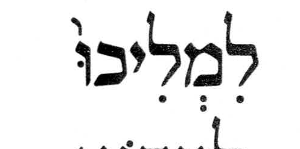 |
MAMוַ֠יָּשֻׁב֠וּ Koren / SimTanוַ֠יָּשֻׁ֠בוּ | 2Chr 20:27 Koren p. 346 SimTan p. 1432 | Different SH placement MAM puts the telisha gedolah helper on bet. Koren and the Simanim Tanakh put it on shin. At Gen 14:7, MAM has the same vowels and puts the helper on shin, as both printed editions do in Chronicles. The helper on bet in Chronicles is likely a MAM error. MAM at Gen 14:7 The issue documents the proposed correction. MAM-basics #371 | Koren 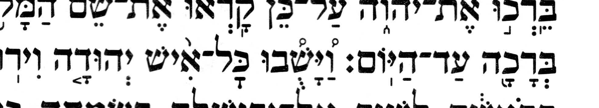 SimTan |


The Koren Classic Tanakh, Classic Edition, Large Size. Koren Publishers Jerusalem Ltd. © 1962, 2020 for font and text design.
Torah Nevi’im Ketuvim Simanim, Elḥanan Yosef edition, Jerusalem 5775. © 5783 Shmuel Meir Riachi and Feldheim Publishers.
The crops document the printed readings shown in the table.
MAM text from MAM-with-doc, based on Miqra according to the Masorah at Hebrew Wikisource, CC BY-SA 4.0.